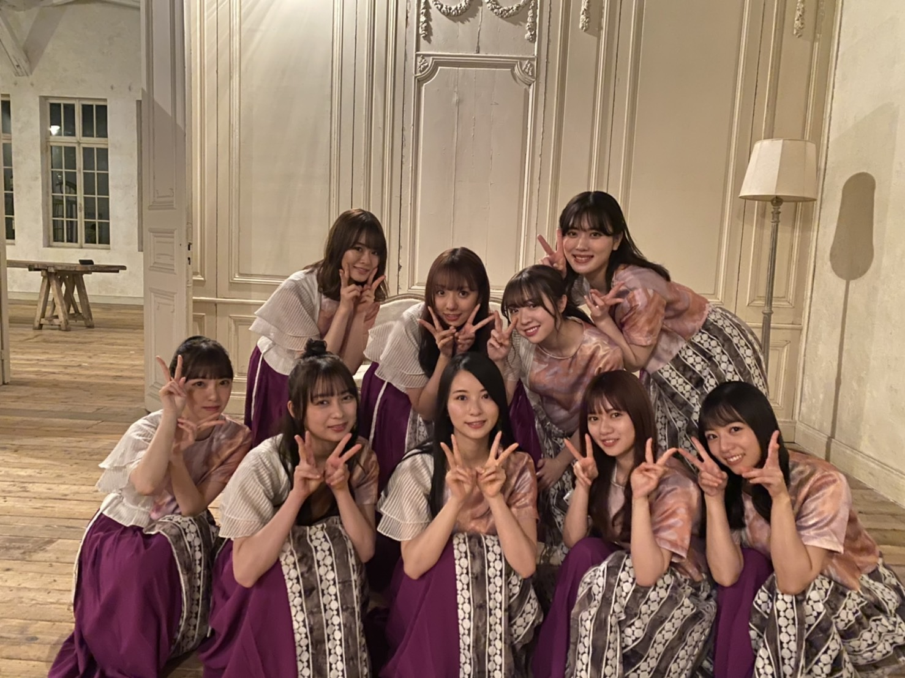

2020/0328Sat大切な存在は想うと苦しくなる

5年前

現在
こうみると堀北コンビも大人っぽくなりました
中身は変わってないけど...笑
最近も、楽屋で日奈子にいたずらされて私が日奈子を追いかけ回して後ろから抱きついてワーキャーしてて
みんなに2人は小学生男子みたいって笑われてました笑
ということで、
今日で2期生が結成して7周年になりました☺︎
いつも2期生を応援してくださる皆さん、ありがとうございます!
アナスターシャの反響や2期生ライブ配信などみなさんの熱量や声援をひしひしと感じて嬉しく思います
それぞれがまだ未熟でぶつかる時もあったし素直になれない時とかもあったけど何だかんだ仲良くて、支えあえて思い合えていて、
卒業生も含め2期生がこのメンバーで本当に良かったなぁと思います
真面目で繊細で強がりで泣き虫で優しくて面白くて
魅力しかない真っ直ぐな2期生のみんなが大好きです
いろんな経験を一緒にしてきた仲間だからこそ分かり合えることがあるし同期の存在がなかったら私はすぐに辞めていたかもなぁと思います
いつも、ありがとう。
恥ずかしいから直接は言わないけど
不器用な私を受け入れてくれて、ありがとう
みんなが幸せになれますように
私も頑張らなきゃ
これからも2期生、そして乃木坂46の応援をよろしくお願いします!

そして勝手に受けたオーディションから
今日までいつも応援してそばで支えてくれた家族にもありがとうを伝えたいです
こんな私だけど活動を通してたくさん恩返しができるようにもっともっと頑張るね
2020年3月28日 堀未央奈
2020/03/28 18:18
コメント(390)
ブログ更新ありがとう！
7周年おめでとう！
辛いこと、苦しいことあるかもしれないけど、何事も前向きに考えて行きましょう。
これからも応援し続けます。
7周年おめでとう！
辛いこと、苦しいことあるかもしれないけど、何事も前向きに考えて行きましょう。
これからも応援し続けます。
Ⅱ期生カッコエエ！！！！！！！！！！！！！！！！！！！！！！！！！！！！！
んんん難しい(>_<)！(というか#ってなぁに？？)
7周年おめでとう！
短かったのかな？
長かったのかな？
嬉しかったこと、辛かったこと、苦しかったこと、楽しかったこと、、、
いっぱいあったよね。
だからこその絆。
いつまでも、いつまでも。
未央奈は未央奈のままで、
最高の笑顔を！
短かったのかな？
長かったのかな？
嬉しかったこと、辛かったこと、苦しかったこと、楽しかったこと、、、
いっぱいあったよね。
だからこその絆。
いつまでも、いつまでも。
未央奈は未央奈のままで、
最高の笑顔を！
みおなちゃん、大好きです
7周年おめでとう！
これからも微力ながら応援します。
これからも微力ながら応援します。
チャァオ～～!☆彡
ヤバい、うちの千葉でも雪降ってるよ～～❕
寒いと体温下がって、免疫力が低下するから
ウイルスが活発に元気になっちゃうよ～～❕
みおちゃん、温かくして気をつけましょ～～❕❤️❤️❤️❤️❤️笑顔
❇️おすまし！より⚜️❇️彡
未央奈ちゃんブログ更新ありがとう！
2期生7周年おめでとう(｡･ω･｡)
ほんとに大好きだなって
改めて思ったよ。
アナスターシャ毎日聴いてるよ。
考察見ながら聴いてるけど、
3.28のところはやっぱりいいな。
聖地も必ず行かないと。
未央奈ちゃん最近ますます綺麗に
なってるな〜って思うの。
未央奈ちゃんの使ってるコスメを
参考にさせてもらってるよ(*¨*)！
ブログもモバメもインスタも
こまめにあげてくれてほんとにありがとう。
大好き〜(⑉• •⑉)
2期生7周年おめでとう(｡･ω･｡)
ほんとに大好きだなって
改めて思ったよ。
アナスターシャ毎日聴いてるよ。
考察見ながら聴いてるけど、
3.28のところはやっぱりいいな。
聖地も必ず行かないと。
未央奈ちゃん最近ますます綺麗に
なってるな〜って思うの。
未央奈ちゃんの使ってるコスメを
参考にさせてもらってるよ(*¨*)！
ブログもモバメもインスタも
こまめにあげてくれてほんとにありがとう。
大好き〜(⑉• •⑉)
おめでとう！！
ほんと綺麗になったね♡
みおながいなければ今の2期生はなかったよ
これからも活躍してね！
コロナひまーー泣
ほんと綺麗になったね♡
みおながいなければ今の2期生はなかったよ
これからも活躍してね！
コロナひまーー泣
いい話聞きました。
みおなちゃん、こんにちは。
2期生7周年おめでとうございます。僕はこれからも、全力で応援します。これからも、よろしくお願いします。
みおなちゃん、体調に気をつけて仕事頑張ってね。
またコメントするね。
2期生7周年おめでとうございます。僕はこれからも、全力で応援します。これからも、よろしくお願いします。
みおなちゃん、体調に気をつけて仕事頑張ってね。
またコメントするね。
これからも活動頑張ってください！！
応援してます
応援してます
おめでとうただただおめでとう
未央奈ブログ更新ありがとう！２期生7周年おめでとう！応援してるよ！
２期生３１５０！！！
こんにちはお疲れさま☺
２枚の写真も良いな✨
日奈子ちゃん堀ちゃん初々しいね。
今可愛い綺麗。
そして２期生結成7周年おめでとう。
まだまだ通過点☺
チーム乃木坂☺
チーム２期生。
頑張りや。
ではではまたね✨
体調には特に気をつけてくださいね✨
ほなね、堀ちゃん☺
２枚の写真も良いな✨
日奈子ちゃん堀ちゃん初々しいね。
今可愛い綺麗。
そして２期生結成7周年おめでとう。
まだまだ通過点☺
チーム乃木坂☺
チーム２期生。
頑張りや。
ではではまたね✨
体調には特に気をつけてくださいね✨
ほなね、堀ちゃん☺
おめでとう

これからもずっと応援します(*´ω`*)
これからもずっと応援します(*´ω`*)
7歳の誕生日おめでとう
魅力しかないし、面白いし、人一倍頑張っている2期生が一番大好きです！！
これからも応援してます！！
魅力しかないし、面白いし、人一倍頑張っている2期生が一番大好きです！！
これからも応援してます！！
未央奈ちゃん、こんにちは
まずは、２期生７周年おめでとう
個性の集まりみたいな２期生、皆んな大好きです
もちろん乃木坂を知ったのは、創設メンバーの１期生メンバーだったし魅力的なメンバーも多かったけど、２期生の魅力に気付いてからは、個々の個性に惹かれて行きました
今は２期生にどっぷりハマってます
さてさて、堀北コンビ、大人になりましたね
２人とも美人になって良かった
これからも、個性豊かに頑張ってね
じょぁ、またね
まずは、２期生７周年おめでとう
個性の集まりみたいな２期生、皆んな大好きです
もちろん乃木坂を知ったのは、創設メンバーの１期生メンバーだったし魅力的なメンバーも多かったけど、２期生の魅力に気付いてからは、個々の個性に惹かれて行きました
今は２期生にどっぷりハマってます
さてさて、堀北コンビ、大人になりましたね
２人とも美人になって良かった
これからも、個性豊かに頑張ってね
じょぁ、またね
オーディション合格した後すぐに高校の退学届を出したというエピソードが好きです。
未央奈さん、お疲れ様です。
遅くなりましたが、二期生結成七周年おめでとうございます。
アナスターシャという至高の楽曲、その世界に触れるだけでも二期生が一つの高みに立ったことを感じます。
先週の乃木中でもナイスファイトでしたね。
あの鬼の形相は、のりさんも言っていた炭治郎もビックリというやつですね(笑)
もはや事故寸前の映像でしたが、二期生を引っ張る闘争心は確かに伝わってきました。
アメトークでは異次元の画力でスタジオをザワつかせてましたね。
画伯の感性というものは、やはり何かが違うのだと思いました。
絵というものは、見るのではなく感じるものだと教わった気がします(笑)
レコメンは、のりさんやレコメンモンスター達の暴走に呆れながらも、最終的にはとても楽しんでいましたね。
いつも笑いどころが満載でした。
未央奈さんのあらゆることに対応できるセンスは抜群ですね。
また未央奈さんがMCのラジオ番組を聴きたいです。
音楽特番が目白押しですね。
乃木坂のパフォーマンスがとても楽しみです。
それではまた
遅くなりましたが、二期生結成七周年おめでとうございます。
アナスターシャという至高の楽曲、その世界に触れるだけでも二期生が一つの高みに立ったことを感じます。
先週の乃木中でもナイスファイトでしたね。
あの鬼の形相は、のりさんも言っていた炭治郎もビックリというやつですね(笑)
もはや事故寸前の映像でしたが、二期生を引っ張る闘争心は確かに伝わってきました。
アメトークでは異次元の画力でスタジオをザワつかせてましたね。
画伯の感性というものは、やはり何かが違うのだと思いました。
絵というものは、見るのではなく感じるものだと教わった気がします(笑)
レコメンは、のりさんやレコメンモンスター達の暴走に呆れながらも、最終的にはとても楽しんでいましたね。
いつも笑いどころが満載でした。
未央奈さんのあらゆることに対応できるセンスは抜群ですね。
また未央奈さんがMCのラジオ番組を聴きたいです。
音楽特番が目白押しですね。
乃木坂のパフォーマンスがとても楽しみです。
それではまた
未央奈さん
2期生の皆様
７周年おめでとうございます！
スタートしてから大きな壁が沢山あったと思いますが乗り越えられたのも、グループ全体はもちろん、同期の結束力が日に日に増してきたこと、辛いこと以上に楽しさ、喜びの方が遥かに大きかったからだと思いました。
節目節目に感謝を言葉で伝える大切さ
も大事なことだな思いました。
最後に2期生の皆様
皆、お綺麗でござます！！！
2期生の皆様
７周年おめでとうございます！
スタートしてから大きな壁が沢山あったと思いますが乗り越えられたのも、グループ全体はもちろん、同期の結束力が日に日に増してきたこと、辛いこと以上に楽しさ、喜びの方が遥かに大きかったからだと思いました。
節目節目に感謝を言葉で伝える大切さ
も大事なことだな思いました。
最後に2期生の皆様
皆、お綺麗でござます！！！
みーおなっ！
応援してっぞー！
応援してっぞー！
未央奈2期生7周年おめでとう‼️
大切な存在は想うと苦しくなる
深い。2期生への想いかな。こっちが言えることじゃないかもだけど、1人じゃない。ってことが大切なんじゃないかな。みおちゃんならわかってるか！ははは。☺️
ほんとだね、大人っぽい！
変わらないことも大切よっ！
ちょ、そのエピソードは。。笑
小学生男子。笑
ということで。笑
2期生が結成して7周年！おめでと！！！
アナスターシャ毎日聴いてる〜♪
良い関係だね。
2期生って最高！
ありがたい。みおちゃんに出会えたのは2期生のおかげでもあるんだね。(^-^)
今後の2期生の活躍を楽しみにしています。
夢が叶う瞬間をみせてください！✨
天ぷらいいなぁ。☺︎
ほいじゃ。
深い。2期生への想いかな。こっちが言えることじゃないかもだけど、1人じゃない。ってことが大切なんじゃないかな。みおちゃんならわかってるか！ははは。☺️
ほんとだね、大人っぽい！
変わらないことも大切よっ！
ちょ、そのエピソードは。。笑
小学生男子。笑
ということで。笑
2期生が結成して7周年！おめでと！！！
アナスターシャ毎日聴いてる〜♪
良い関係だね。
2期生って最高！
ありがたい。みおちゃんに出会えたのは2期生のおかげでもあるんだね。(^-^)
今後の2期生の活躍を楽しみにしています。
夢が叶う瞬間をみせてください！✨
天ぷらいいなぁ。☺︎
ほいじゃ。
みおな
今日もお疲れ様です
改めまして2期生7周年おめでとう
ベースはそのままだけど、5年も経つと大人っぽくなるよね
2期生だと、絢音ちゃんが1番大人っぽくなったなーって思います
みおなは、オーディション受けて受かればすぐ高校退学したりと決断力があってこそ今は実を結べているので大丈夫だと思います
今のみおなは、どこに行っても通用するよ
今月いっぱいで琴子も卒業して2期生は少なくなるけど、応援してくので頑張って下さい
ありがとうございました（今日のブログもすぐコメントします）
今日もお疲れ様です
改めまして2期生7周年おめでとう
ベースはそのままだけど、5年も経つと大人っぽくなるよね
2期生だと、絢音ちゃんが1番大人っぽくなったなーって思います
みおなは、オーディション受けて受かればすぐ高校退学したりと決断力があってこそ今は実を結べているので大丈夫だと思います
今のみおなは、どこに行っても通用するよ
今月いっぱいで琴子も卒業して2期生は少なくなるけど、応援してくので頑張って下さい
ありがとうございました（今日のブログもすぐコメントします）
ブログ更新ありがと！！
7周年おめでとう！！
もう1回未央奈のショートヘア見たいな…
7周年おめでとう！！
もう1回未央奈のショートヘア見たいな…
未央奈ちゃんへ、二期生結成
七周年
おめでとうございます
岡山の乃木坂
ファンより。
七周年
おめでとうございます
岡山の乃木坂
ファンより。
2期生7周年おめでとうございます！
色々な場面をくぐり抜けてきた努力の2期生が大好きです！
これからも頑張ってください！
ファイト〜
色々な場面をくぐり抜けてきた努力の2期生が大好きです！
これからも頑張ってください！
ファイト〜
もちろん応援するよ！！
未央奈ちゃんのパフォーマンスが好きで、考え方とかも全部好きで、本当に大好き
2期生大好き、乃木坂大好きです！
未央奈ちゃんのパフォーマンスが好きで、考え方とかも全部好きで、本当に大好き
2期生大好き、乃木坂大好きです！
未央奈ーーー！アナスターシャめっちゃ好きなの！！
MVの雰囲気もダンスも歌も全部！！！これからもいっぱいMV見て、いっぱいききます！
MVの雰囲気もダンスも歌も全部！！！これからもいっぱいMV見て、いっぱいききます！
堀ちゃん７周年おめでとうございます！
これからも大切な仲間と一緒に頑張ってください！
応援しています！
これからも大切な仲間と一緒に頑張ってください！
応援しています！
これからも乃木坂と自分自身の為に頑張って下さい。乃木坂を卒業した後の未央奈も楽しみだな。我々ファンはずっと応援してます
これからも頑張って
乃木坂46の存在が僕の光です。
これからも頑張って
乃木坂46の存在が僕の光です。
みおなちゃん更新ありがとう╰(*´︶`*)╯♡
写真もありがと〜
堀北コンビも大人になりましたね〜(о´∀`о)
中身は変わってないんや笑
2期生結成7周年おめでとうございます！
これからも応援しております･:*+.\(( °ω° ))/.:+
2期生最強ですね！
写真もありがと〜
堀北コンビも大人になりましたね〜(о´∀`о)
中身は変わってないんや笑
2期生結成7周年おめでとうございます！
これからも応援しております･:*+.\(( °ω° ))/.:+
2期生最強ですね！
まいちゅんはなんか二期感がないよね笑
飛鳥やみなみちゃんよりベテランみたい笑。
昔も可愛いけど、今日が一番可愛いよ
飛鳥やみなみちゃんよりベテランみたい笑。
昔も可愛いけど、今日が一番可愛いよ
２期生の絆は凄い！！
これからも応援するね(*´∀｀*)尸"
これからも応援するね(*´∀｀*)尸"
堀ちゃんブログありがとう！
2期生7周年おめでとうございます
あっという間ですね
僕はみんな個性的でそれでいて
とても魅力的な2期生が大好きです
これからも応援してます
2期生7周年おめでとうございます
あっという間ですね
僕はみんな個性的でそれでいて
とても魅力的な2期生が大好きです
これからも応援してます
未央奈ブログ更新ありがとう!!♡
そして2期生7周年おめでとう!!
これからも2期生応援してます!!
あナスターシャ大好きでLINEのミュージック設定にしました!!
そして2期生7周年おめでとう!!
これからも2期生応援してます!!
あナスターシャ大好きでLINEのミュージック設定にしました!!
みおちゃんブログ更新ありがとう♪
コメント遅れてごめん……2期生7周年おめでとう´ω`)ﾉ
本当にみんなで支え合ったからこそここまで来れたんだね( ´ω` )/今のメンバーだからこそ最高なんだよね♪俺も本当に乃木坂を、2期生を、みおちゃんを好きになってよかった(^ ^)
これからもよろしくお願いします！！
福岡のトゥモロー⊿
コメント遅れてごめん……2期生7周年おめでとう´ω`)ﾉ
本当にみんなで支え合ったからこそここまで来れたんだね( ´ω` )/今のメンバーだからこそ最高なんだよね♪俺も本当に乃木坂を、2期生を、みおちゃんを好きになってよかった(^ ^)
これからもよろしくお願いします！！
福岡のトゥモロー⊿


堀北コンビ大人っぽくなったね。無邪気で楽しそうな二人が好き。
2期生7周年おめでとう！未央奈は2期生のことをすごく大切に思っていて、そんな未央奈が好きだから僕も2期生のことをもっと応援したいと思った。8年目の2期生がもっともっと活躍できるといいな。そして2期生ライブ実現させてほしい。
2期生想い、家族想いな未央奈のことが大好きです。2期生を乃木坂をこれからも応援するよ。
では！